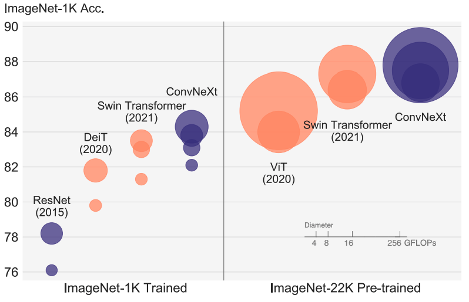
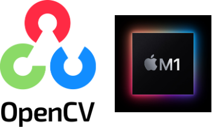
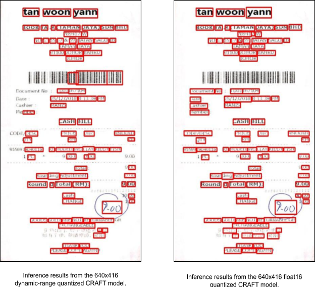
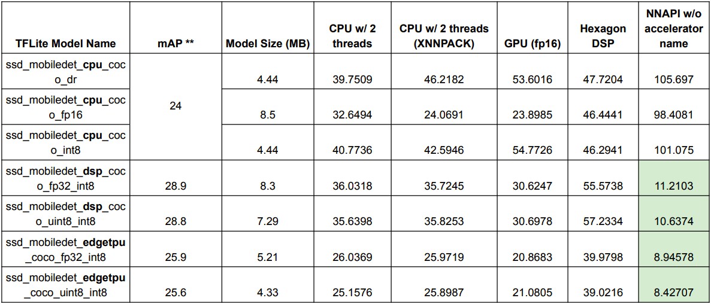
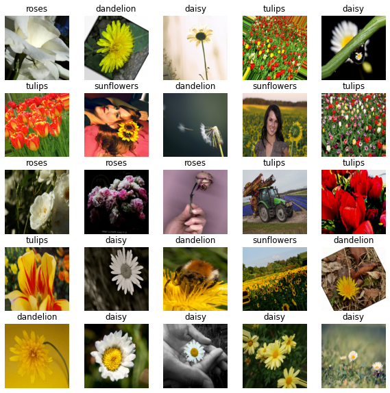

Setting up and getting up to speed with an AMD Strix Halo (Ryzen AI Max+ 395) mini-PC for local AI development.
Optimizing flow-based image and video generation models beyond just speed.
Different forms of attention mechanisms, used in modern diffusion models.
Learnings from streamlining the PyPI releases of 🧨 Diffusers.
How to use Terraform to provision cloud hardware for running ML experiments with Vertex AI Workbench.
Techniques we used to build a performant and efficient product categorization endpoint for our product data pipeline.
Thoughts on learning and exercising ML skills.
To conclude this series, we examine the benefits of using a sentence-conditioned BERT model for multi-sentence text data.
How to use a BERT model with variable-length text data while minimizing training time.
We analyze the impact of sequence padding techniques on model training time for variable-length text data.
Sharing my perspective on two primary questions related to Google Summer of Code.
Recipes to improve Cloud Dataflow pipelines for large-scale datasets involving sequential text data.

Converting PyTorch ConvNeXt models to TensorFlow and publishing them on TF-Hub.

This post shows how to build and install OpenCV 4.5.0 on a MacBook Pro that comes with an M1 chip.

This post compares two Deep Learning-based text detectors CRAFT and EAST with respect to deployment-specific requirements.

Learn about the criticalities of effectively optimizing MobileDet object detectors for mobile deployments.

tf.keras
Learn about different ways of doing data augmentation when training an image classifier in tf.keras.
Check them here.